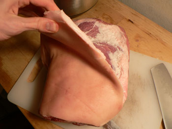

Mark Bittman's Braised Pork Shoulder, part one
I am upset with Mark Bittman right now, but it’s my own fault. I decided that it was a really good idea to order a 7.5-pound pork shoulder FreshDirect with which to prepare Bittman’s Braised Pork with Red Wine. So I spent the last 30 minutes hacking up this beast:
I don’t mind hacking up meat, and in fact I rather enjoy it. I admit that I was just a bit perturbed by what I believe to be real pig skin on this piece of meat:

But that didn’t slow me down either. I’m annoyed that the meat is on the stove braising right now and that I didn’t brown it first. I said to myself, I should brown this meat. But then I decided to just follow the recipe as it is; I’ve never braised pork in this manner before, and perhaps browning isn’t as beneficial as it is for beef or chicken.
Then I return to the article to find him saying, “You need not even brown the meat first, though there is some benefit in doing so: the flavor will become more complex and the dish’s color will improve as well.” Well, thanks, Mark, for not mentioning this in the actual recipe. The New York Times online is irritating in that respect; recipes and their accompanying articles aren’t on the same page, so it’s easy to miss important information or hints like this one.
In the time it took me to write this post, however, the apartment began to smell of delicious, melting pork fat, so things are looking up.
To be continued…
Comments
I know what you mean about how annoying it is to find information vital to the recipe’s success buried in a later paragraph; after all these years I still do that. Most cooking schools and classes stress the importance of reading the entire thing through at least once before starting any of the actual cooking but most of us don’t have the patience (it’s like ‘checking your work’ in school!)
I haven’t seen anything so close to the actual animal since I worked in the butcher shop in the Watergate Hotel—your shoulder of pig looks like something Jeffrey Dahmer might have had in his kitchen!
Just look at that meat.
Those haters still trolling around the trader joe’s article just don’t know who they’re dealing with.
Add a comment